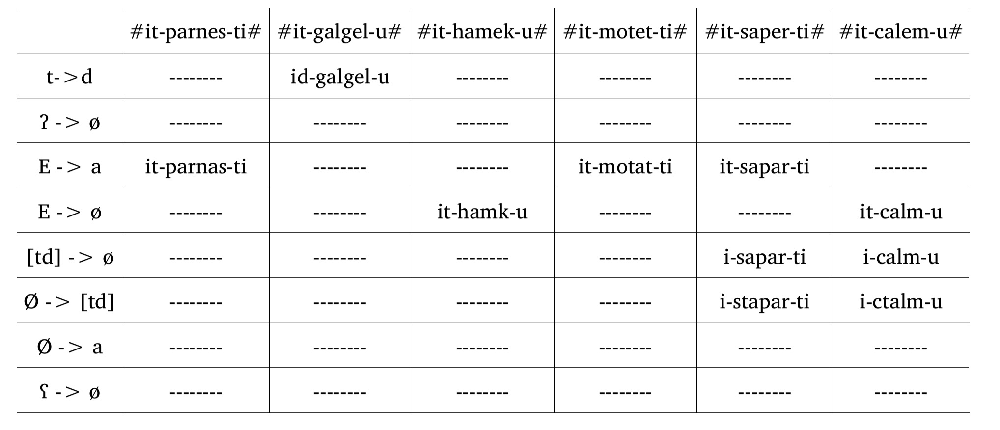
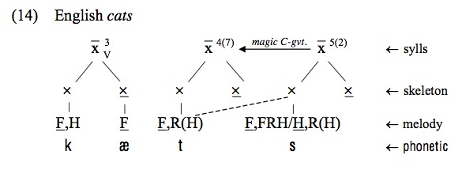

<section data-background="phonmedia/vowelsandcrawler.jpg"> <section style="background-color:rgba(255, 255, 255, 0.5)"> <h1>Linguistics 111: Phonology</h1> <h3>Dr. Will Styler - Winter 2019</h3> </section> --- ### Today's Plan - What was this course about? - Your Phonological Future - The Phonological Future --- # What was this course about? --- ## Phonology The study of how sounds pattern in Language and languages --- ### Within-Language Phonological Questions - What sounds differentiate words? (Phonemic Analysis) - ... and what do speakers hear as being “the same sound”? - How do speakers tend to group sounds together? (Natural Classes) - How do sounds change when combined together? (Phonological Alternations) - What combinations are “legal” in the language? (Phonotactics) - How are syllables formed and what kinds of syllables does the language prefer? (Syllable Structure) --- ### You've got this now - You see how sounds can carry contrast, or just vary contextually - You now understand that classes and features can often be more valuable than segments - You know some of the rules (like sonority and syllable structures) that make sounds more or less 'legal' - ... and you can cope with the weirdest of syllable problems --- ### Phonological Theory Questions - What patterns of sound patterns are more and less common around the world? - How should we model the sound patterns we see in language? - Are we using rules that transform 'underlying' sounds into one another? - Are we choosing a form among many which does the fewest things we don't like? - How do these various approaches handle *real data from real languages*? - Do they predict all the things that really happen? - Do they predict crazy things that *never* happen? - How do they account for exceptions and other weird data? --- ### Yep, you're on this too - You know what kinds of rules are common, and which ones seem more weird - You know the advantages of rule-based approaches - You've felt the pain of rules that don't predict everything - ... and of rules that do predict **everything** - ... and you've seen your perfect analysis shatter in light of a handful of exceptions --- ### ... and we've gone beyond that - We've seen data that *nobody's* really happy about - We've seen some alternative approaches to handling these data - We've seen that all the regularity in the world shatters when you're in the field --- ### Your work is not done, though. --- # There is *so* much more joy/pain in Phonology --- ## Real world data are *much* dirtier --- ### LIGN 111 Phonology problems  --- ### We're isolating sets of rules to make your life easier - In reality, you'll have more moving parts - More rules, more interactions -  --- ### We're giving you a necessary and sufficient amount of data - We're giving you data in digestible chunks - In reality, you'll have *all* of the data - Step 1 is to identify the forms which explain the rules --- ### We're cleaning the data - "Hmm, that epenthesis isn't understandable in this subset of data" - "These four forms turn this from one rule to six. Let's leave those out" - "... Yeah, let's pretend that's not a long vowel" --- ### You're not dealing with all the other issues in Linguistics - You're told what sounds actually are on the surface (Phonetics) - You're told what the words mean (Semantics) - You know the morphemes involved, and that they're not secretly different forms (Morphology) --- ### You're given problem sets which we know you can handle - Languages have no such mercy - Any given language has the potential to force advances in theoretical phonology - ... and even individual forms can force us to rethink how phonology should work --- ## We've also neglected big parts of phonology --- ### Prosodic and Metrical Phonology - Prominent - Stressful - Get it?!? - Completely missing from LIGN 111 --- ### Signed Language Phonology - Absolutely, 100% a thing - A major component of signed language study - Completely absent here --- ### Phonology of Harmony - We've touched on harmony issues, but it gets *much* more complex - Blocking, Domains, directionality - Nope. Not in 111. --- ### Historical Phonology - "How do sounds change as languages change?" - "How do contrasts develop and disappear over time?" - "Wait, how the f\*\*\* did Afrikaans get tone?" ---  --- (and much, much more!) --- ## We haven't even talked about some of the other approaches to phonology! --- ### We don't have a "best" theory of phonology - We're teaching you the best one to teach undergrads - ... but there are many people working on approaches they each feel are 'best' --- ### We've talked about rules - There's a UR which contains the unpredictable stuff - Rules *derive* the surface form from it using predictable processes - Complexity comes from multiple interacting rules, or from abstract URs --- ### We've talked about constraints - There's a UR which contains the unpredictable stuff - We know what this language *doesn't* like, and how bad it is to do each of those things - Let's pick the least-worst form! - Complexity comes from constraint choice and ordering, as well as GEN --- ... but there are other ways! --- ### Government Phonology - "Well, we're pretty good at syntax. Why not do phonology like we do Syntax?" - "Screw features, let's just derive everything from six primitives" -  --- ### Computational Phonological Modeling - "There's still some variation in the data. How can we model that with constraints?" - Let's compute the 'best' solution using *actual language data* - Plug a large corpus of data in with some constraints to a statistical model (like Maximum Entropy) - You'll get rankings of the constraints, and probabilities of each form --- ### Usage-Based Phonology - All we have is the surface forms - We store every word we've ever heard, as whole words - Phonemes aren't a thing - The frequency of hearing a given form determines the correct answer - Wugs are handled by analogy --- ### Why usage-based phonology? - Goodbye URs and Abstractions! - Memories, Mammaries, and Artillery - Complexity comes from analogy - ... and the fact that it's worthless to describe a language's phonological system in a grammar --- ### (We talk more about usage-based approaches in LIGN 120) - ... assuming it's me or Gabi teaching it! --- ### Laboratory Phonology - "I wonder if these phonological questions can be addressed by experimental phonetic study?" - "Are my nasal vowels actually nasal?" - "Is this a devoiced /d/, or just a /t/?" - "Do we see evidence of constraints vs. rules in this experimental paradigm?" --- ### We're not quite sure if LabPhon == Phonology - Or whether it's just a trojan horse from Phonetics - 😈 - ... but it is absolutely a thing, and now more than ever, phonetics and phonology are tight - ... and LabPhon is changing the nature of the field --- # What is the future of Phonology, anyways? --- ### The Battle for the Soul of Phonology - Some people want phonology to stay what it has historically been - ... and focus on rigorous description of the data - Some people want phonology to become an experimental discipline - ... and continue the phonetics/phonology love-fest - Some people want phonology to become a mathematical discipline - ... and treat phonology like any other data-modeling problem - Some people just need to work with languages - ... and they'll do whatever it takes to get the patterns described --- ### Much of what we do in Modern Phonology was developed within the last 50 years - The people who revolutionized the field were sitting in a classroom like this 60 years ago! - ... and many argue the field is ripe for a new revolution --- ## The Future of the Field of Phonology starts today --- ### Some of you will go on to be actual professional Phonologists - You will help the field to advance - You will help new tools, theories, and technologies to be developed - You will help guide the field into the future - **You will work with phonology for the rest of your career!** --- ### Some of you will run screaming, as fast as you can, from Phonology - Phonology is *hard*. - Many argue it's the hardest undergrad linguistics class - Some argue it's the hardest linguistic subfield - It's also often super abstract - ... and that level of abstraction doesn't sit well with everybody - The problems you want to solve might not be phonological... - ... but guess what! - **You too will work with phonology for the rest of your career!** --- *... as a matter of fact ...* --- ### **All of you will have to deal with phonology for the rest of your careers** - There is no place to run - There is no place to hide - Phonology will find you. - LIGN 120: Phonology Strikes Back! --- ... because ... --- # Phonology is absolutely *crucial* to getting linguistic work done --- (So, you best be able to deal with it!) --- ## 10 weeks ago, an optimistic man said... --- ### In 10 weeks, you will look at a phonological problem and... - Know that it's a phonological problem - Identify what's changing or unexpected - Understand how to start looking at and characterizing it - Use tools from this class to break it down - Describe the pattern, and form a coherent analysis - Describe the pattern, and form an *elegant* analysis --- ### Your final dataset for LIGN 111 <center> <style type="text/css"> .tg {border-collapse:collapse;border-spacing:0;} .tg td{font-family:Arial, sans-serif;padding:10px 5px;border-style:solid;border-width:1px;overflow:hidden;word-break:normal;border-color:black;} .tg th{font-family:Arial, sans-serif;font-weight:normal;padding:10px 5px;border-style:solid;border-width:1px;overflow:hidden;word-break:normal;border-color:black;} .tg .tg-fymr{font-weight:bold;border-color:inherit;text-align:left;vertical-align:top} .tg .tg-0lax{text-align:left;vertical-align:top} .tg .tg-xldj{border-color:inherit;text-align:left} .tg .tg-0pky{border-color:inherit;text-align:left;vertical-align:top} </style> <table class="tg"> <tr> <th class="tg-fymr">Singular</th> <th class="tg-fymr">Gloss</th> <th class="tg-fymr">Plural</th> <th class="tg-fymr">Gloss</th> </tr> <tr> <td class="tg-0lax">[fat]</td> <td class="tg-0lax">'glass'</td> <td class="tg-0lax">[avat]</td> <td class="tg-0lax">'glasses'</td> </tr> <tr> <td class="tg-0lax">[tas]</td> <td class="tg-0lax">'cat'</td> <td class="tg-0lax">[adas]</td> <td class="tg-0lax">'cats'</td> </tr> <tr> <td class="tg-0lax">[sap]</td> <td class="tg-0lax">'card'</td> <td class="tg-0lax">[azap]</td> <td class="tg-0lax">'cards'</td> </tr> <tr> <td class="tg-xldj">[pu]</td> <td class="tg-0pky">'trashcan'</td> <td class="tg-0pky">[abu]</td> <td class="tg-xldj">'trashcans'</td> </tr> <tr> <td class="tg-xldj">[kop]</td> <td class="tg-0pky">'phone'</td> <td class="tg-0pky">[agop]</td> <td class="tg-xldj">'phones'</td> </tr> </table> </center> --- ### In case you haven't noticed...  --- ### You're now rolling your eyes and speeding through data that would have wrecked you in January - We are *incredibly* proud of you! --- ### This class had two main goals - 1) To give you enough phonological knowledge to move past many phonological problems - 2) To show you why phonology is an interesting and worthwhile field to spend your life in --- # We very much hope we succeeded! --- <huge>Thank you!</huge>